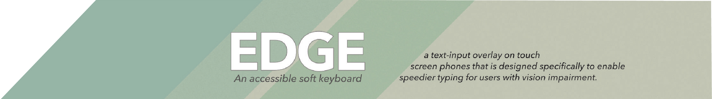
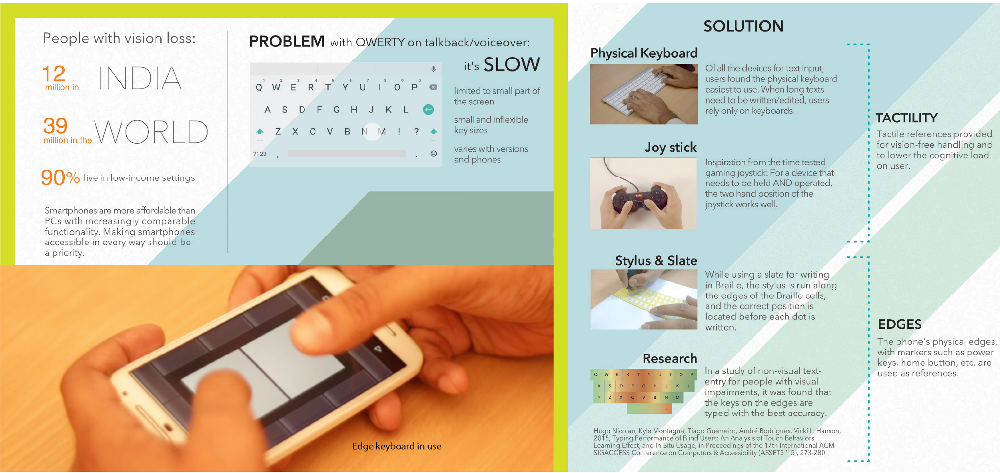
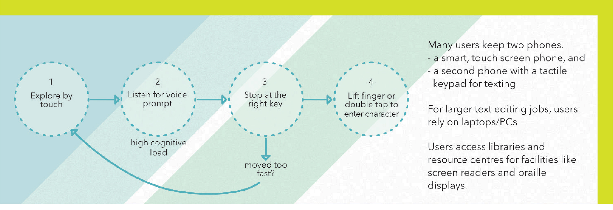
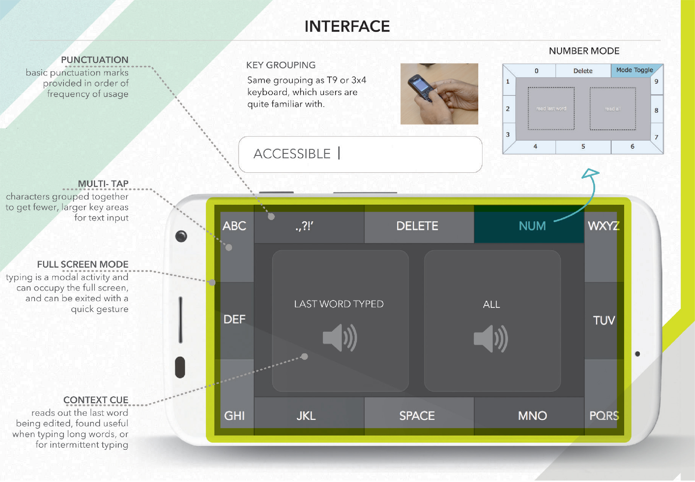
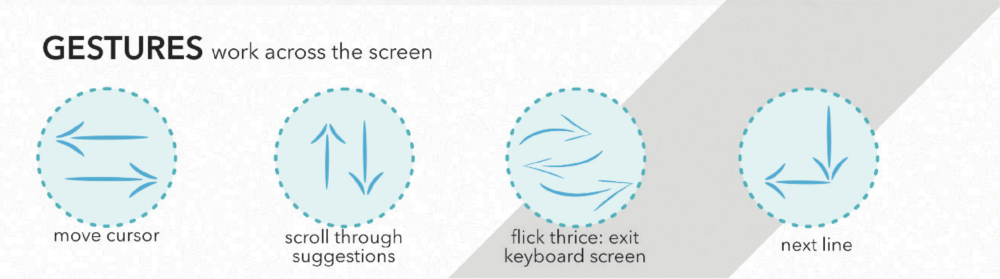
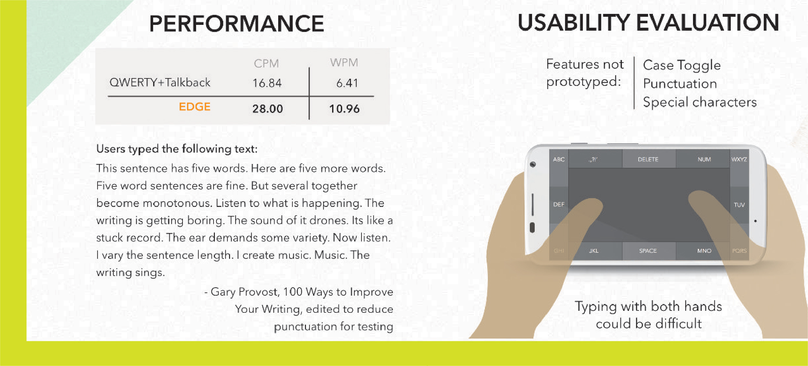
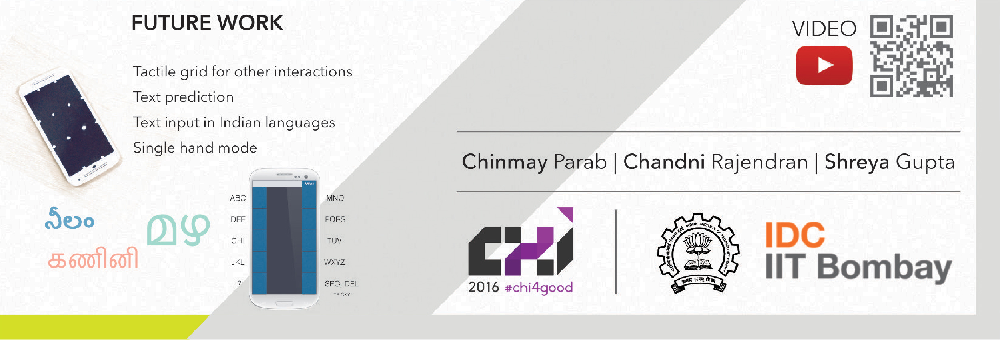
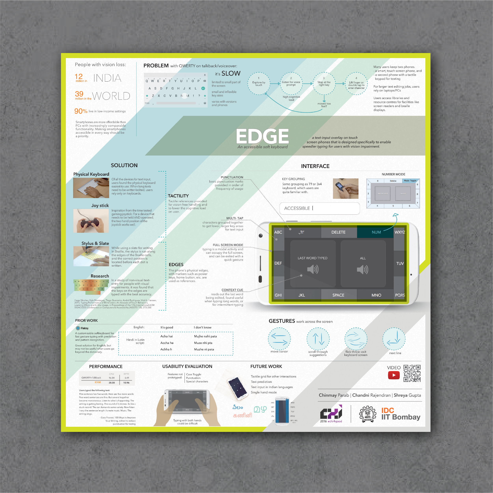

Edge: Typing When Blind
It was around December 2014, and I had spent a fair amount of time with a friend who was blind. I couldn't help observing how he used his phone with Android Talkback mode. I noticed that of all the gestures he was most confident with the two finger swipe down from the top - to pull down the notifications bar.
Clearly, having a tangible edge as a marker made the action considerably easier. That sparked the idea to explore if more of the gestures could leverage the sides of the phone. In this project, I've looked at the use of phone edges in typing.
      Over the winter break of 2015, I prototyped this keyboard (great ooportunity to learn to develop on android) and also sent it as an entry to the CHI student design competition. The brief that year was about assistive technology and this project was a good fit. This is the poster presented at the conference:
My co-authors, Chinmay Parab and Shreya Gupta were involved in user testing, video creation and paper-writing.
Once we got shortlisted to the top 15, we also got the Gary marsden Student Travel Grant that enabled us to travel to San Jose to present at the conference.
At the conference, we presented the poster, and made it to the top four teams that got to present to a larger audience at the conference. Video below: